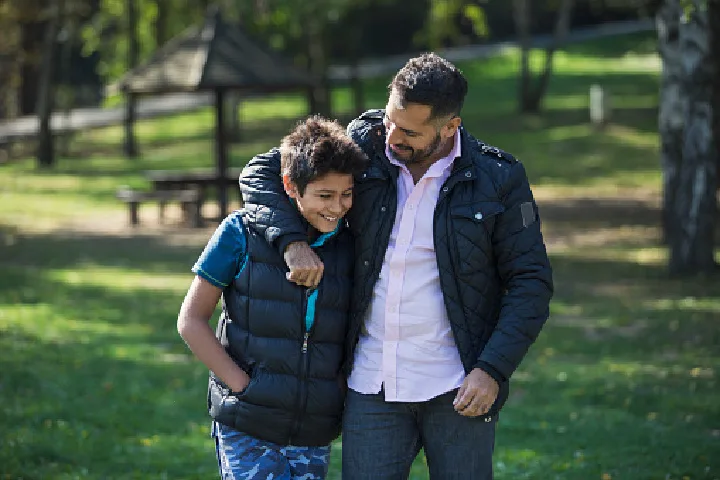
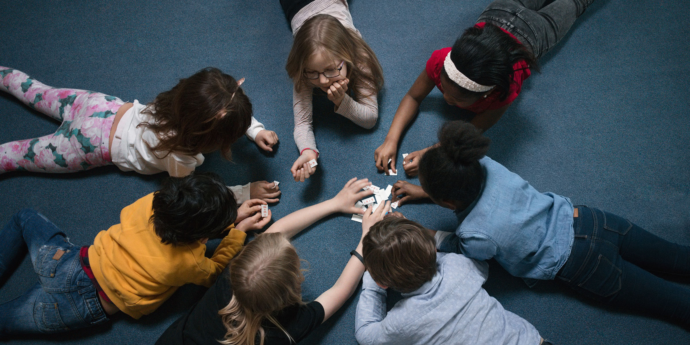

Mental Health
Awareness
Education
Resources
Science and Psychology of Adoption
Emotional and Social Development

Relationships with Adults

Relationships with peers
Emotional Functioning
Sense of Identity and Belonging
Gaming
Community, friends, bonding